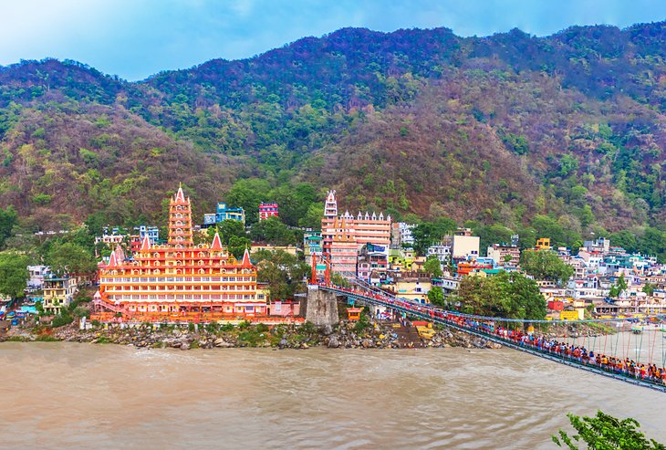

1. Gateway Of India - Mumbai

Want to see a more cosmopolitan side of India? Head to the energetic, coastal city of Mumbai—home to ultra-wealthy entrepreneurs and the hottest Bollywood actors. Tourists are never far from five-star hotels or gourmet restaurants in this luxe city. And even if those activities are out of budget, a cruise down the beloved Marine Drive will make you feel like royalty as you catch a glimpse of the scenic coast and glamorous Art Deco buildings. You can also see a more authentic, local side of Mumbai in the bustling "Thieves Market" or at the Churchgate railway station, where hundreds of thousands of homemade lunches are packed up for delivery to the city's office workers every day. Make sure you devote a day to checking out Sanjay Gandhi National Park and exploring the 2,000-year-old Kanheri Cave carvings.
2. Rajasthan

Translated to "Land of Kings," Rajasthan brims with remnants of the kings and queens of past centuries. Between its glittering palaces, stately forts, and lively festivals, this western state deserves a starring role in your trip to India. Jaipur, part of the Golden Triangle Tourist Circuit, which also includes Agra and New Delhi, is one of the top places to visit in Rajasthan. Dubbed "The Paris of India," it's known for its characteristic pink buildings, lavish City Palace, and jewelry stores galore. The "Blue City," Jodhpur, offers tourists an equally unforgettable experience in its hilltop Mehrangarh Fort. Udaipur oozes romance with its flower-lined streets and fantastic City Palace Complex, where the royal family still lives today. And Jaisalmer looks like an Arabian Nights fairy tale brought to life, with its yellow sandstone structures and historic havelis (mansions). No matter where you end up in this desert state, you'll be captivated by the magic of Rajasthan.
3. Rishikesh
Rishikesh has been on the radar for spiritually minded travelers since the late 1960s, when the Beatles spent time in Maharishi Mahesh Yogi's ashram—now an abandoned site that has become an off-the-beaten-path tourist attraction for fans. The town is nestled in the foothills of the Himalayas on the banks of the holy Ganges River, and serves as a center for yoga and pilgrimages. Take part in the action, or just enjoy the sounds of the temple bells and sightseeing from Rishikesh's two suspension bridges, often guarded by assertive families of monkeys. Keep your distance
4. Varanasi

One of the oldest continually inhabited cities in the world, Varanasi is arguably the holiest place in India. The spiritual activities take place along the sacred Ganges River, where pilgrims bathe and mourners cremate recently deceased relatives in plain view of passersby. Tourists, on the other hand, find their own flavor of spiritualism taking sunrise boat rides, releasing floral blessings that float on the river, and watching the fire-filled Hindu chanting ceremonies from the steep ghats. Away from the water, the streets of the old town twist and turn like an endless maze. Legend has it that there's still no accurate map of Varanasi, and once you experience the labyrinthine city for yourself, you'll be inclined to believe it.
5. Ajanta & Ellora caves

Time travel isn't a reality for travelers quite yet, but you can get pretty close at the Ajanta and Ellora Caves in Maharashtra. Both UNESCO World Heritage Sites, the caves feature intricate carvings from at least 1,500 years ago. The Ajanta Caves are the oldest of the two attractions, featuring around 30 Buddhist cave monuments cut into the rock as far back as the 2nd century BC. Around 100 kilometers southwest, the Ellora Caves contain nearly three dozen Buddhist, Jain, and Hindu carvings, the most famous of which is the Kailasa Temple (Cave 16), a massive structure devoted to Lord Shiva that features life-size elephant sculptures. The magnificent carvings at both sites will leave you filled with wonder.